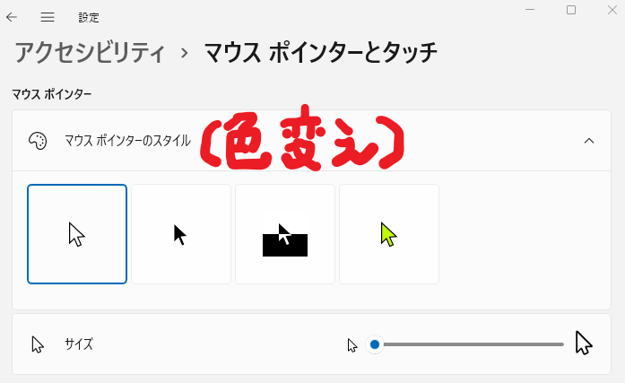
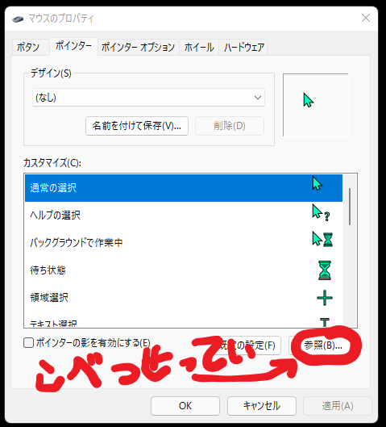

全日本マウスカーソル変えようぜ協会のみなさまこんにちは。
しゅうくんです。
みなさん、マウスカーソルを見失ってませんか？
JUN汁ｗは毎日見失ってます。愚かですね。
そこでこのページでは優しいしゅうくんがカーソルの位置を教えてあげています。やさし～
え？スマホで見てるからわからない？
ようニイちゃん、困ってるみたいだな
あ…！あなたは！
俺そんな名前なの！？
しゅうくんがポインターの位置を教えてあげられるのはこのページだけだから、他のサイトとかゲームしてるときはダメなんだよね
そんならパソコンの設定を変えりゃいいじゃねえか
※画面はうぃんどうず１１だが、１０でもあんまり変わらない。それ以外のOSは知らん
へえ、色変えるだけならマウスポチポチするだけでいいンだ
色変えるだけでも視認性は向上するな！
画面を共有したりキャプチャするときでもマウスが見やすいのはいいことだ！
うひょ～
まあでも、これだけだと面白みがないよね、カーソルも、このページも、お前も
オリジナルカーソル作るぞ！
用意するファイルは.curか.ani(動く)だ。絵は.pngやらで作成してソフトで変換すりゃいい。画像サイズに制限はない感じだが、小さく圧縮されることだけ注意だ(16×16?)。もちろん、うぃんどうず以外のことは、知らん。
※画面はうぃんどうず１１だが、１０でもあんまり変わらない。それ以外のOSは知らん
できた(32×32)

色を緑にして目立たせ、立体的にすることで面白みをプラス。さらに色を2色に絞ることでシンプルに仕上げました。
なんで穴あいてるの？
面白み
(こいつ全部面白みで通すつもりか…！？)
でもなんか違和感がある
俺の形状と見比べてみるとわかるかもな
太いのか、32×32を目いっぱい使ってるからシルエットが正方形なんだ
でもデフォルトのカーソルは画像の左半分くらいの領域しか使ってない
マウスカーソルの一番大事な部分はマウスカーソルの先端だ
だってそこに判定があるんだからな
つまり、カーソルを見たときに視線が先端に誘導されることが大事だ
なるほど、このカーソルはぱっと見たときにカーソルの中央付近を見ちゃうな
これは形状が正方形だからなのか
実際には世の中には正方形デザインのカーソルは多くあるし、JUN汁ｗが勝手にそう思ってるだけの可能性は高いけどな
あと、穴あいてるのも原因だな（笑）
泣いてます
すべてを貫く槍…ゲイ・ボルグとでも呼ぼうか…
先端恐怖症の人は見れないな
刺しやす～い
いうほど刺しやすいか…？
どちらにせよ見た目がよくない、もっと親しみやすいかわいらしさが必要
…
…
…
きょうはもう寝ます
ハイ。